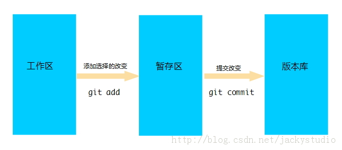

####Git 笔记-2
摘自:http://blog.csdn.net/jackystudio/article/details/12249389
#####Git的基本术语解释:
1. <strong>分支(Branches)</strong>
一个分支意味着它是一个独立拥有自己历史版本信息的代码线。你可以从已有的代码中生成一个新的分支，
这个分支与其余的分支完全独立。默认的分支叫做master。用户可以选择一个分支，选择一个分支叫做Checkout.
2. 提交(Commit)
当你提交你的更改到Git库中，它将创建一个新的提交对象。这个提交对象会有一个新版本的唯一标识。本次修订后，
可以检索，例如，如果你想看到一个旧版本的源代码。每个提交对象中都会包含修改者和提交者，从而有可以确定是谁做了改变。
修改者和提交者，可以是不同的人。
3. 头(HEAD)
头是一个象征性的参考，最常用以指向当前选择的分支。
4. 仓库(Repository)
仓库包含了随着时间的推移和各种不同的分支和标签不同版本历史。在Git仓库的每个副本是一个完整的信息库。你可以从仓库中获取你的工作副本
5. 修订(Revision)
表示代码的一个版本状态。Git通过用SHA1 hash算法表示的ID来标识不同的版本。每一个 SHA1 ID都是160位长，16进制标识的字符串。
6. 标记(Tags)
标记指的是某个分支某个特定时间点的状态。通过标记，可以很方便的切换到标记时的状态。
7. URL
URL决定了仓库所在的位置.
8. 工作树/区（Working tree）
工作区中包含了仓库的工作文件。您可以修改的内容和提交更改作为新的提交到仓库。
9. 暂存区（Staging area）
暂存区是工作区用来提交更改（commit）前可以暂存工作区的变化。暂存区包含了工作区的一系列更改快照，这些快照可以用来创建新的提交。
10. 索引（Index）
索引是暂存区的另一种术语。
11. 工作区，暂存区和版本库的关系

12. 一些常用的git指令
add Add file contents to the index
bisect Find by binary search the change that introduced a bug
branch List, create, or delete branches
checkout Checkout a branch or paths to the working tree
clone Clone a repository into a new directory
commit Record changes to the repository
diff Show changes between commits, commit and working tree, etc
fetch Download objects and refs from another repository
grep Print lines matching a pattern
init Create an empty Git repository or reinitialize an existing one
log Show commit logs
merge Join two or more development histories together
mv Move or rename a file, a directory, or a symlink
pull Fetch from and integrate with another repository or a local branch
push Update remote refs along with associated objects
rebase Forward-port local commits to the updated upstream head
reset Reset current HEAD to the specified state
rm Remove files from the working tree and from the index
show Show various types of objects
status Show the working tree status
tag Create, list, delete or verify a tag object signed with GPG